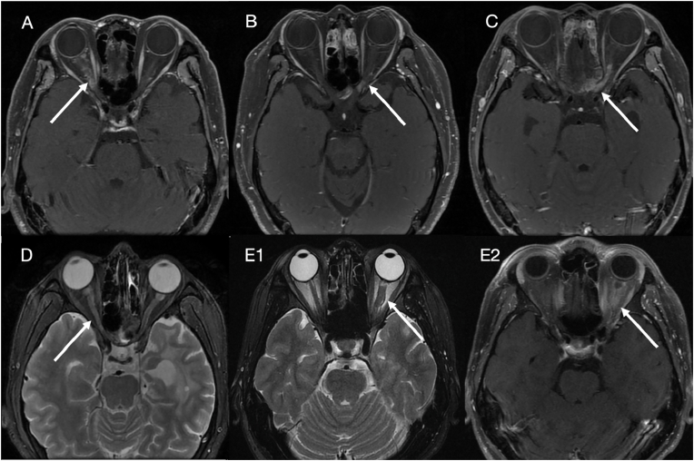
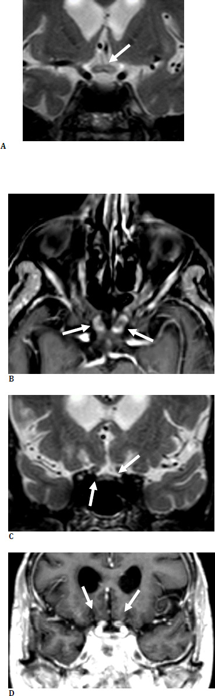
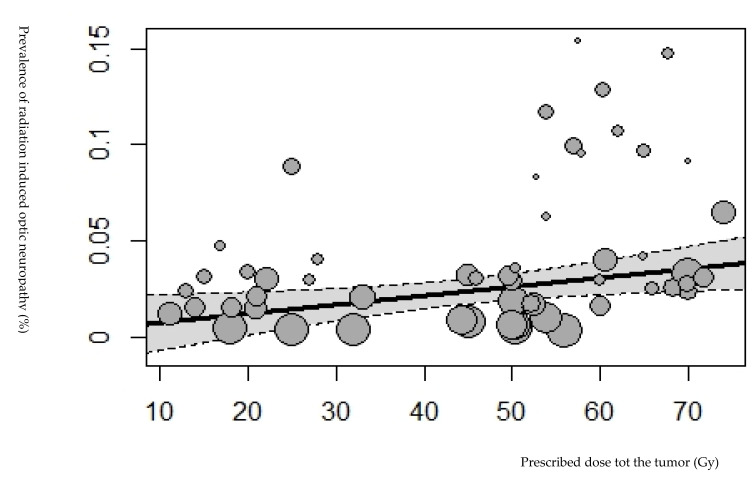
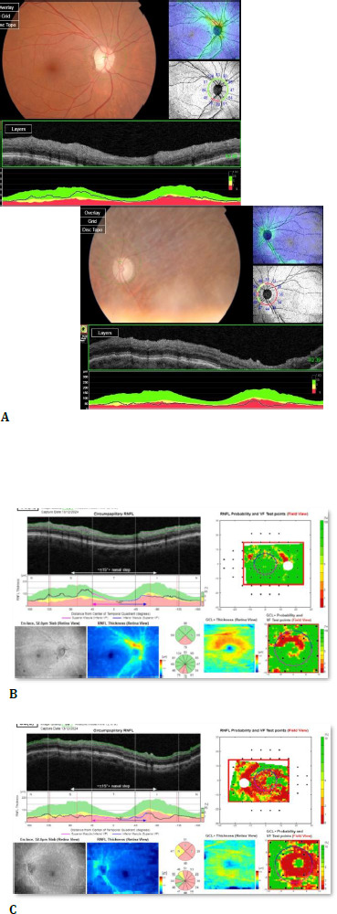

3236 — Bệnh thần kinh thị do xạ trị (RION): ngấm thuốc thị thần kinh KHÔNG khối, phân biệt tái phát u / Radiation-induced optic neuropathy
Tags: pattern:ngam-thuoc-TK-thi pattern:day-TK-thi pattern:teo-TK-thi pattern:mat-thi-luc-khong-dau vung:mat vung:than-kinh-thi protocol:MRI-hoc-mat protocol:T1-fat-sat protocol:DWI-ADC protocol:OCT-RNFL protocol:thi-truong score:CTCAE incidentaloma:khong
Mức chắc chắn (certainty): tổng hợp y văn (literature synthesis) — dựng từ meta phân tích 1994–2025 về tỷ lệ RION theo kỹ thuật xạ (PMC13742046), loạt 43 ca/69 mắt có MRI + OCT (PMC10577828), 289 ca proton nền sọ (PMC8582447), 30 u màng não cạnh thị sau SRS một lần (PMC12929000), đoàn hệ tiền cứu 89 bệnh nhân proton (PMC13583721), tổng quan độc tính mắt do xạ (PMC12384690), tổng quan liệu pháp anti-VEGF cho tổn thương do xạ (PMC10050069) và ca nguyên văn 73 tuổi (PMC13453118). Nhóm không có bệnh nhân của mình; số nào chưa kiểm chứng ghi "chưa rõ". Không ghi tên tác giả — attribution dùng tạp chí + năm + PMCID (đối chiếu Europe PMC ngày 2026-11-20).
Câu chốt: sau xạ vùng hốc mắt/nền sọ, giảm thị lực không đau mà MRI chỉ thấy thị thần kinh ngấm thuốc, không có khối, là RION cho tới khi chứng minh ngược lại — và điều ngược lại cũng đúng: RION KHÔNG có nghĩa là thất bại điều trị. Năm con số phải thuộc: (a) tỷ lệ — u trong nhãn cầu 17,0% (95%CI 12,1–23,5; brachytherapy là chủ yếu), u ngoài nhãn cầu xạ phân liều thường 4,7%, xạ giảm phân liều 2,1%, proton nền sọ 4,2% (12/289) (PMC13742046, PMC8582447); (b) liều — nguy cơ tăng khi > 50 Gy EQD2 tới thần kinh/giao thoa; QUANTEC: Dmax < 55 Gy → < 3%**, **> 60 Gy → 7–20%; SRS một lần **< 12 Gy → < 10%**, thực hành giữ **Dmax ≤ 8 Gy** (PMC12384690, PMC13742046, PMC12929000); **(c) thời gian** — khởi phát trung vị **16–30 tháng**, loạt 43 ca **36,3 ± 30,5 tháng (1–132)**, muộn nhất **11 năm** (PMC13742046, PMC10577828); **(d) MRI** — **82,5% (33/40 mắt) ngấm thuốc thị thần kinh**, đoạn **nội sọ 69,7%** > đoạn trong hốc mắt 33,3% > ống thị giác 27,3% > giao thoa 12,1%, T2 tăng tín hiệu 81,8%, dày/giãn 39,4%, ngấm thuốc kéo dài 3 tuần–24 tháng (PMC10577828); (e) tiên lượng — thị lực cuối chỉ cải thiện 13,0%, tỷ lệ mù tăng 65,2% → 72,2%, corticoid liều cao và oxy cao áp không khác chứng trong loạt này (PMC10577828).
1. Tổng quan bệnh học – cơ chế hình ảnh (TẠI SAO)
1.1 RION là hoại tử xạ MUỘN của đường thị giác trước, không phải "viêm"
- Định nghĩa thực hành: RION là tổn thương thần kinh thị do xạ xuất hiện hàng tháng đến hàng năm sau xạ trị, biểu hiện bằng giảm thị lực không đau, tiến triển, thường không hồi phục, sau khi đã loại trừ u tiến triển/chèn ép, viêm thần kinh thị, thiếu máu thị, nhiễm trùng và di căn màng não.
- Ba tầng tổn thương (giải thích mọi dấu hiệu hình ảnh):
- Nội mô vi mạch là mô phân bào → xạ gây chết tế bào nội mô, huyết khối vi mạch, thiếu máu cục bộ mạn của dây thị và giao thoa;
- Myelin và sợi trục thoái hóa thứ phát → dẫn truyền chậm (VEP P100 kéo dài) rồi mất sợi trục;
- Tế bào hạch võng mạc (RGC) chết → RNFL/GCL mỏng dần trên OCT, teo đĩa thị về sau.
- Vì sao MUỘN: hiệu ứng chính là lên mạch máu và mô đệm, không lên tế bào thần kinh đang yên lặng; tổn thương mạch tiến triển nhiều tháng trước khi đủ mất sợi trục để mất thị lực. Vì vậy chụp MRI ngay sau xạ hầu như luôn "sạch" — đây là lý do lâm sàng của cả bài.
- Yếu tố nguy cơ đã được định lượng: liều tối đa (Dmax) tới thần kinh/giao thoa > 50–55 Gy EQD2, khoảng cách u tới thị thần kinh, thể tích u, tuổi cao (p = 0,008), tăng huyết áp (p < 0,001), u xâm lấn/chèn ép thần kinh, và số lần mổ (PMC8582447, PMC13742046).
- Bẫy dịch tễ: RION xảy ra cả dưới 50 Gy — 3/43 ca trong PMC10577828 sau 16 Gy, 40 Gy và 41,4 Gy, và cả 3 đều ngấm thuốc đoạn nội sọ. Nghĩa là "liều thấp" không loại trừ, chỉ làm giảm xác suất.
1.2 Vì sao "ngấm thuốc – dày – T2 sáng – không khối" — vật lý và mô bệnh
| Dấu hiệu | Vì sao (cơ chế) | Hệ quả đọc phim |
|---|---|---|
| Ngấm gadolinium | Xạ phá tight junction nội mô mạch thần kinh → hàng rào máu–thần kinh hở → gadolinium vào khoang ngoại bào → T1 ngắn lại, tín hiệu tăng | Chỉ thấy khi có T1 fat-sat sau tiêm: mỡ hốc mắt sáng trên T1 thường che mất dây thị ngấm thuốc |
| Kéo dài nhiều tháng | Hàng rào hở từng đợt trong quá trình hoại tử/xơ hóa, không phải một lần | Loạt 43 ca: ngấm 3 tuần–24 tháng (trung bình ~13,5 tuần ở nhóm kết quả); "còn ngấm" không đồng nghĩa "còn u" |
| Dày/giãn (expansion) | Phù nội bào + ngoại bào của dây thị trong ống xương kín | 39,4% mắt; dày kèm ngấm mới là mẫu hình RION, dày đơn thuần đối xứng có thể là biến thể |
| T2/T2FS tăng tín hiệu | Nước ngoại bào (phù) và gliosis làm T2 dài | 81,8% mắt; T2FS bắt buộc — T2 thường bị mỡ quanh dây che |
| Không có khối | Mô hoại tử – xơ không tạo khối choán chỗ; không có tế bào u | Khối + ngấm + đẩy lệch = u, không phải RION |
| Teo muộn | Mất sợi trục → dây thị nhỏ, RNFL mỏng | OCT mỏng rõ sau 1–2 năm; MRI teo là dấu hiệu muộn, không dùng để chẩn đoán sớm |
- ADC/DWI: RION không phải nhồi máu tế bào cấp nên ADC không giảm mạnh; vùng viêm có thể giảm nhẹ. Chưa có ngưỡng ADC riêng cho RION (xem mục 7) — đừng áp ngưỡng 887 × 10⁻⁶ mm²/s của ung thư đầu–cổ (PMC12041163 dẫn trong bài 3233) như một chốt.
- Tại sao RNFL mỏng trước khi đĩa thị nhợt: sợi trục mất dần ở đoạn sau nhãn cầu; OCT đo được mỏng trước khi soi đáy mắt thấy nhợt. Trong 2 tháng đầu, 64,9% (24/37) mắt vẫn có đĩa thị bình thường (PMC10577828) — đĩa bình thường không loại trừ RION.
1.3 Ngưỡng định lượng nằm lòng
| Chỉ số | Giá trị | Nguồn |
|---|---|---|
| RION sau xạ u trong nhãn cầu | 17,0% (95%CI 12,1–23,5; 0,0–81,7; theo dõi 1,3–11,0 năm; 33 nghiên cứu brachytherapy) | PMC13742046 |
| RION sau xạ ngoài nhãn cầu, phân liều thường | 4,7% (39 nghiên cứu, theo dõi 5,1 năm) | PMC13742046 |
| RION sau xạ giảm phân liều ngoài nhãn cầu | 2,1% (28 nghiên cứu, theo dõi 3,4 năm) | PMC13742046 |
| U đầu–cổ so với u khác | Tỷ lệ RION cao hơn (hệ số 0,7185; p = 0,0076) | PMC13742046 |
| Proton nền sọ, Dmax ≥ 45 GyRBE | 4,2% (12/289); Dmax thần kinh 59,6 GyRBE (45–76); liều u 71,2 GyRBE (67–76); theo dõi 73,8 tháng (5–197) | PMC8582447 |
| Ngưỡng liều xạ phân liều thường (QUANTEC) | Dmax < 55 Gy → < 3%**; **> 60 Gy → 7–20%; Bhandare: < 50 Gy | PMC12384690 |
| Ngưỡng liều SRS một lần (QUANTEC) | Dmax < 12 Gy → < 10%; thực hành u cạnh thị: giữ Dmax ≤ 8 Gy | PMC12384690, PMC12929000 |
| SRS u màng não cạnh thị (30 ca) | Liều u 12,7 ± 3,1 Gy (7–20); Dmax thần kinh 9,3 ± 5,6 Gy (4–25,9); mắt còn chức năng: 7,2 ± 1,6 Gy (4,8–12,9) | PMC12929000 |
| Tiên lượng thị lực sau SRS (438 u đa trung tâm) | Suy giảm thị lực 10% (theo dõi 51 tháng), 9% ở 5 năm, 21% ở 10 năm; 42% do u tiến triển, phần còn lại do RION; Dmax ≥ 10 Gy là yếu tố dự báo | PMC12929000 (dẫn nghiên cứu đa trung tâm) |
| Khởi phát (latency) | Trung vị 16–30 tháng; loạt 43 ca 36,33 ± 30,48 tháng (1–132) | PMC13742046, PMC10577828 |
| Thời gian ngấm thuốc trên MRI | 3 tuần – 24 tháng (một ca ≥ 2 năm) | PMC10577828 |
| Phân bố đoạn tổn thương | Nội sọ 69,7%, trong hốc mắt 33,3%, ống thị giác 27,3%, giao thoa 12,1%, dày 39,4%, T2 cao 81,8% (33/40 mắt) | PMC10577828 |
| Tỷ lệ ngấm thuốc | 82,5% (33/40 mắt) | PMC10577828 |
| Hai mắt | 60,1% (26/43) hai mắt; ở nhóm này tổn thương nối tiếp hai mắt, cách 2 tuần–23 tháng | PMC10577828 |
| Kết cục thị lực | Cải thiện ngắn hạn 24,6% (17/69), cuối cùng 13,0% (9/69); mù 65,2% → 72,2% | PMC10577828 |
| OCT RNFL trung bình | 91,50 ± 6,36 µm (< 1 tháng) → **56,00 ± 7,91 µm** (> 6 tháng), p = 0,009; góc trên 133,5 → 58,6 µm (p < 0,001) | PMC10577828 |
| Thời điểm RNFL mỏng rõ | 1–2 năm sau xạ; bất thường thị trường/VEP nổi bật trong năm đầu | PMC13583721 |
| Tỷ lệ chung (gộp retinopathy + optic neuropathy) | 3,8%; không có bệnh võng mạc < 50 Gy**; bệnh thần kinh thị **gặp nhiều hơn khi > 50 Gy; võng mạc 6,0% vs thần kinh thị 2,0% | PMC10093581 |
2. Mẫu hình + chẩn đoán phân biệt theo vị trí (Gamut)
Bài toán không phải "dây thị có ngấm không" mà là "ngấm ở ĐOẠN NÀO, xuất hiện LÚC NÀO, có KHỐI không, và thị lực có hồi phục không".
2.1 Trục vị trí — đoạn nào hay bị và vì sao
- Đoạn nội sọ trước giao thoa (69,7%) — hay nhất: gần xoang hang, rãnh thị, nền sọ, nơi liều cao nhất khi xạ u tuyến yên, u màng não, ung thư vòm/xoang; dây thị ở đây mảnh, ít mô đệm bảo vệ và cấp máu từ nhánh màng não/động mạch mắt dễ bị tổn thương.
- Đoạn trong hốc mắt (33,3%) — dù có mỡ và cơ bảo vệ (một số tác giả cho rằng hiếm gặp), loạt 43 ca vẫn thấy 12 mắt ngấm đoạn hốc mắt sau xạ vòm/xoang hàm (PMC10577828).
- Đoạn trong ống thị giác (27,3%) — ống xương hẹp: phù là tăng áp lực trong ống → dày + thiếu máu, giải thích vì sao đoạn này mau teo và tiên lượng kém.
- Giao thoa (12,1%) — thường kèm u tuyến yên/u sọ hầu hoặc xạ toàn não; biểu hiện bán manh hai bên, dễ bị gọi là u tiến triển.
- Đoạn sau giao thoa/đường thị — hiếm sau xạ; nếu có, phải nghĩ di căn màng não, bệnh thần kinh do xạ lan rộng hơn là RION đơn thuần.

2.2 Trục thời gian — "đồng hồ" RION
| Mốc sau xạ | Điều kỳ vọng | Việc không được làm |
|---|---|---|
| 0–6 tháng | Hiếm RION; có thể có phù nhẹ thoáng qua; đa số MRI bình thường | Không gọi RION khi chưa có triệu chứng; không sinh thiết |
| 6–18 tháng | Cửa sổ RION điển hình (trung vị 16–30 tháng); bắt đầu ngấm thuốc + dày | Không quy mọi ngấm thuốc cho tái phát u |
| 18 tháng–3 năm | RION muộn; RNFL mỏng rõ sau 1–2 năm; ngấm có thể còn | Không dừng theo dõi vì "đã qua 2 năm" |
| 3–11 năm | Vẫn có ca mới (tới 132 tháng); teo thị tiến triển; bệnh võng mạc do xạ xuất hiện | Không bỏ OCT/thị trường ở mốc 5 năm |
- Ngấm thuốc có thể tồn tại tới 2 năm — đây là lý do một lần MRI "còn ngấm" không đủ để xạ lại hay sinh thiết.
- Hai mắt nối tiếp: 60,1% (26/43) ca hai mắt, và ở nhóm này mắt thứ hai nối tiếp mắt đầu, cách 2 tuần–23 tháng → khi mắt thứ hai mờ, đừng mặc định là "u đã lan"; khám lại cả đường thị.
2.3 Trục hình thái — mnemonic "DÀI – KHÔNG – NGẤM – MUỘN"
- DÀI: ngấm một đoạn dài dây thị/giao thoa (không phải ổ ngắn vài mm như viêm thần kinh thị điển hình).
- KHÔNG khối: không có khối choán chỗ, không đẩy lệch giao thoa; nếu có khối → nghĩ u.
- NGẤM: T1FS sau tiêm dương tính, có thể kèm dày (39,4%) và T2 cao (81,8%).
- MUỘN: xuất hiện sau nhiều tháng–năm, kèm giảm thị lực không đau, không hồi phục.
2.4 Gamut "thị thần kinh/giao thoa ngấm thuốc sau xạ"
- RION — mẫu hình trung tâm của bài: dài, không khối, muộn, không đau, không hồi phục.
- U tiến triển/xâm lấn thần kinh (tumor progression/perineural spread) — khối tại ổ u, lớn dần trên 2 lần chụp, ngấm không theo trục dây thị, có thể hủy xương/xâm lấn cơ; 42% suy giảm thị lực sau SRS u cạnh thị là do u tiến triển, không phải RION (PMC12929000) — nên luôn so ổ u trước khi gọi RION.
- Viêm thần kinh thị tự miễn (optic neuritis: MS/MOG/AQP4) — đau khi đảo mắt, khởi phát ngày, ngấm đoạn ngắn hoặc dài ≥ 1/2 dây (AQP4/MOG), ADC giảm, đáp ứng corticoid, có thể tái phát; không có tiền sử xạ đúng liều/vị trí.
- Viêm thần kinh thị do thuốc miễn dịch (ICI-related optic neuritis) — bệnh nhân anti-PD1/PD-L1: ngấm thị thần kinh, giảm thị lực hai bên, có thể hồi phục một phần khi ngừng thuốc + corticoid; ca PMC13453118 vừa xạ 66 Gy vừa anti-PD1 nên hai nguyên nhân cùng tồn tại — đây là bẫy thực hành lớn.
- Thiếu máu thị trước (NAION) — không đau, mất thị trường từng phần (altitudinal), đĩa phù giai đoạn đầu, ngấm nhẹ/không ngấm, đĩa crowded, yếu tố ĐTĐ/tăng huyết áp.
- Di căn màng não/thâm nhiễm thần kinh — ngấm màng não dạng nốt, dày không đều, tế bào học dịch não tủy, tiến triển; thường kèm đau đầu, liệt dây sọ khác.
- Nhiễm trùng (giang mai, lao, nấm) — hiếm, có hội chứng nhiễm, dịch não tủy; ngấm dài nhưng đáp ứng kháng sinh.
- Thay đổi hậu phẫu — mỡ ghép/vật liệu cầm máu T1 sáng, mất tín hiệu trên fat-sat, không ngấm hoặc viền mỏng; ổn định qua các lần chụp.
- Bệnh võng mạc do xạ — phù hoàng điểm, xuất tiết, giãn mao mạch, thị thần kinh có thể bình thường; thường đi kèm RION nhưng không giải thích được ngấm dây thị.
3. Bảng so sánh phân biệt (ma trận đối chiếu)
| Thực thể (entity) | Hình ảnh điển hình (MRI ± CT/OCT) | Chốt vào (rule-in) | Chốt loại (rule-out) | Gợi ý xác nhận |
|---|---|---|---|---|
| RION | Ngấm dài thị thần kinh/giao thoa, T1FS+C, T2 cao 81,8%, dày 39,4%, không khối, teo muộn | Tiền sử xạ > 50 Gy + giảm thị lực không đau sau 16–30 tháng + ngấm dài không khối | Có khối đẩy lệch/lớn dần → không phải RION; đau khi đảo mắt + ADC thấp → nghĩ viêm | Đối chiếu liều Dmax, so MRI trước xạ, OCT/VEP, thị trường |
| U tiến triển/xâm lấn thần kinh | Khối tại ổ u lớn dần, ngấm không theo trục dây, hủy xương/xâm lấn cơ, đẩy lệch giao thoa | Khối mới/lớn lên trên 2 lần chụp + xâm lấn ngoài bao thần kinh | Dây thị ngấm đều, không khối, ổ u ổn định ≥ 6 tháng → không phải u | So từng lát với MRI nền; 42% suy giảm thị lực sau SRS là do u (PMC12929000) |
| Viêm thần kinh thị (MS/MOG/AQP4) | Ngấm đoạn ngắn (MS) hay ≥ 1/2 dây/giao thoa (AQP4/MOG), ADC thấp, có thể phù đĩa | Đau khi đảo mắt + khởi phát ngày + đáp ứng corticoid + huyết thanh AQP4/MOG | Không đau, khởi phát tuần–tháng, không hồi phục, có tiền sử xạ tại chỗ → nghĩ RION | Huyết thanh AQP4/MOG, MRI não, dịch não tủy |
| ICI-related optic neuritis | Ngấm thị thần kinh ± giao thoa, thường hai bên, không khối | Đang dùng anti-PD1/PD-L1/CTLA-4 + giảm thị lực hai bên + cải thiện khi ngừng thuốc/corticoid | Bệnh nặng dần, không đáp ứng, liều xạ đúng ngưỡng → nghĩ RION trội | Ngừng ICI thử, hội chẩn ung thư–mắt; không loại trừ được bằng MRI |
| NAION | Đĩa phù giai đoạn đầu, ngấm nhẹ/không, dây thị bình thường hoặc dày nhẹ | Mất thị trường altitudinal + đĩa crowded + ĐTĐ/THA + không đau | Ngấm dài mạnh + T2 cao + tiền sử xạ → nghĩ RION | Soi đáy mắt, OCT RNFL, thị trường 24–2 |
| Di căn màng não/thâm nhiễm | Ngấm màng não dạng nốt, dày không đều, có thể lan khe ổ mắt trên | Nốt màng não + tế bào học dịch não tủy dương + đau đầu/liệt dây sọ | Ngấm theo trục dây, màng não mỏng đều, không nốt → không nghĩ di căn | MRI toàn trục + tế bào học dịch não tủy |
| Thay đổi hậu phẫu | Mỡ/vật liệu T1 sáng, mất tín hiệu trên fat-sat, viền ngấm mỏng, bờ theo giải phẫu | Bờ khớp vị trí mổ + mất tín hiệu trên T1FS + ổn định | Ngấm mới trong dây thị, ngoài vùng mổ, lớn dần → không phải hậu phẫu | So MRI hậu phẫu nền; CT cửa sổ xương |
| Bệnh võng mạc do xạ | Phù hoàng điểm, xuất tiết, giãn mao mạch, dây thị có thể bình thường | OCT/FA có phù hoàng điểm + liều võng mạc > 50 Gy | Ngấm dây thị/giao thoa → có thành phần RION | OCT hoàng điểm, FA; khám đáy mắt |

Ba dấu hiệu hay bị đọc sai
- "Ngấm thuốc = u" — sai: 82,5% RION ngấm thuốc. Ngấm chỉ có nghĩa khi đọc kèm hình thái (dài/khối), thời điểm (muộn) và diễn tiến.
- "Không ngấm = không RION" — sai: 17,5% mắt RION không ngấm trong loạt 43 ca; MRI âm không loại trừ nếu lâm sàng và liều phù hợp.
- "Đĩa thị bình thường = không RION" — sai: 64,9% mắt còn đĩa bình thường trong 2 tháng đầu; OCT RNFL và thị trường mới là cửa sổ sớm.
4. Protocol chụp + phân tầng nguy cơ + theo dõi
4.1 Bộ chuỗi xung tối thiểu (mỗi lần chụp)
- MRI 1,5T hoặc 3T, hốc mắt + nội sọ, lát 2–3 mm cho hốc mắt và 1 mm cho ống thị giác/giao thoa (không cắt lớp dày 5 mm — dây thị đường kính chỉ 3–4 mm):
- T1 axial không tiêm (mỡ, máu, vật liệu);
- T2FS axial + coronal (phân biệt phù/T2 cao với mỡ);
- DWI b = 0/1000 + ADC (loại trừ nhồi máu/viêm có hạn chế khuếch tán thật);
- T1FS sau gadolinium axial + coronal + sagittal, phủ từ nhãn cầu tới giao thoa và đường thị;
- DTI/tractography nếu có: FA giảm sớm hơn teo thấy được — chưa có ngưỡng chuẩn cho RION.
- CT hốc mắt/nền sọ lát ≤ 1 mm, cửa sổ xương khi cần: dị vật, vôi hóa, hủy xương, vật liệu cản quang, mốc giải phẫu ống thị giác.
- Khám mắt định lượng mỗi lần: BCVA logMAR, thị trường 30-2 (MD/PSD), OCT RNFL + GCL, VEP P100 (ẩn và biên độ). Trong đoàn hệ proton, thị trường (MD/PSD) là chỉ số mạnh nhất (chính xác 75–79%), RNFL mỏng rõ sau 1–2 năm, còn BCVA kém nhạy (PMC13583721).
- Rà soát liều (dosimetry) là một phần của "protocol": ghi Dmax và D0,03 cc tới thần kinh thị hai bên + giao thoa, quy đổi EQD2 với α/β = 2 Gy cho hiệu ứng muộn; liều kê ≠ liều dây thị.
4.2 Phân tầng nguy cơ — bảng dùng trong hội chẩn
| Nhóm | Tiêu chí | Hành động |
|---|---|---|
| Nguy cơ thấp | Dmax thần kinh < 50 Gy EQD2 (hoặc SRS < 8 Gy) và không có yếu tố nguy cơ | Khám mắt + MRI theo triệu chứng; tư vấn dấu hiệu |
| Nguy cơ trung bình | Dmax 50–55 Gy hoặc u sát/chèn thần kinh | MRI + OCT + thị trường ở 6 và 12 tháng, sau đó hằng năm |
| Nguy cơ cao | Dmax > 55–60 Gy, SRS Dmax ≥ 10 Gy, proton ≥ 45 GyRBE vào thần kinh, tuổi cao/tăng huyết áp, u xâm lấn | Theo dõi 3–6 tháng/lần trong 2 năm, sau đó 6–12 tháng; hội chẩn xạ trị–mắt trước khi xạ lại |
| Đã có triệu chứng | Giảm thị lực/thị trường mới | MRI khẩn trong 2 tuần + OCT/VEP; không chờ đủ lịch |
- Thang phân độ: CTCAE (phiên bản hiện hành) xếp độ theo thị lực, nên bỏ sót giai đoạn sớm khi thị lực còn tốt nhưng thị trường/OCT đã bất thường (PMC13583721). Vì vậy trong thực hành nên báo cáo kèm MD/PSD và RNFL bên cạnh độ CTCAE.

- Lịch theo dõi (đề xuất của bài, chưa có thử nghiệm): MRI + khám mắt trước xạ (nền), 6 tháng, 12 tháng, sau đó hằng năm tới ≥ 5 năm — vì latency tới 132 tháng (11 năm) và ca muộn vẫn xuất hiện sau 5 năm (PMC10577828). Ghi rõ đây là khung tham khảo, không phải khuyến cáo cấp A.
flowchart TD
A["Giảm thị lực sau xạ vùng hốc mắt hoặc nền sọ"] --> B{"Đau khi đảo mắt, khởi phát ngày?"}
B -->|Có| C["Nghĩ viêm thần kinh thị hoặc ICI: AQP4/MOG, MRI não, corticoid thử"]
B -->|Không| D{"MRI T1FS sau tiêm: có KHỐI hoặc ổ u lớn lên?"}
D -->|Có| E["Nghĩ u tiến triển hoặc xâm lấn thần kinh: so MRI nền, hội chẩn"]
D -->|Không| F{"Dây thị hoặc giao thoa ngấm dài, dày, T2 cao?"}
F -->|Có| G["RION: đối chiếu Dmax và latency, OCT RNFL, thị trường, VEP"]
F -->|Không| H{"OCT hoặc thị trường bất thường?"}
H -->|Có| G
H -->|Không| I["Theo dõi 3 tháng, khám lại; tìm nguyên nhân khác: NAION, võng mạc do xạ, di căn màng não"]
G --> J{"Thị lực còn chức năng và trong 2 tuần đầu?"}
J -->|Có| K["Hội chẩn: corticoid liều cao hoặc oxy cao áp, bằng chứng yếu"]
J -->|Không| L["Tư vấn tiên lượng, phục hồi chức năng, tránh xạ lại vào đường thị"]
4.3 Điều trị — nói đúng mức bằng chứng
- Corticoid liều cao: dùng phổ biến nhưng trong loạt 43 ca không khác nhóm chứng về thị lực ngắn hạn và cuối cùng (p > 0,05) (PMC10577828).
- Oxy cao áp (HBOT): nhóm HBOT có tỷ lệ cải thiện cao nhất (57,1%) nhưng khác biệt không có ý nghĩa so với chứng; hiệu quả chỉ được báo cáo khi bắt đầu trong 72 giờ (PMC10577828 dẫn y văn). Sau 2 tuần, lợi ích không rõ.
- Anti-VEGF nội nhãn: dữ liệu chủ yếu từ RION sau brachytherapy u hắc mạc (khác sinh học với xạ ngoài): 14 mắt, trung vị 13 mũi mỗi 6–8 tuần, 100% giảm dấu hiệu đĩa (xuất huyết/phù), 64% thị lực ổn định/cải thiện qua trung vị 29 tháng — nhưng đây là loạt ca tiến cứu nhỏ, không phải thử nghiệm (PMC10050069). Không có dữ liệu cho RION sau xạ phân liều nền sọ.
- Điều trị gốc vẫn là phòng ngừa: giữ Dmax dưới ngưỡng, giảm liều vào đường thị, và không xạ lại một dây thị đã có RION nếu không có chỉ định sống còn.
5. Biến thể bình thường và cạm bẫy
- "Không thấy ngấm vì chụp T1 thường" — mỡ hốc mắt sáng trên T1 che dây thị; không có fat-sat là không đọc được RION. Đây là lỗi kỹ thuật hay gặp nhất.
- Lát cắt dày 5 mm — dây thị 3–4 mm, cắt 5 mm có thể nằm giữa hai lát; luôn dùng 1 mm qua ống thị/giao thoa.
- Ngấm thuốc màng não quanh dây thị — có thể là phản ứng sau mổ/xạ lành tính, mỏng, đều, giảm dần; nốt dày không đều mới đáng lo.
- Mỡ ghép/vật liệu cầm máu — T1 sáng, mất tín hiệu khi fat-sat, không ngấm; nếu vẫn sáng trên T1FS thì đó là máu/mô, không phải mỡ.
- Biến thể giải phẫu: giao thoa nằm thấp trong hố tuyến yên, dây thị lượn sóng, ống thị giác hẹp bẩm sinh — dễ đọc nhầm là "dày"; so hai bên và MRI nền.
- "Đã quá 2 năm nên không thể RION" — sai: latency tới 11 năm; ca muộn vẫn xảy ra.
- "Đã xạ 16 Gy thì loại trừ" — sai: có ca RION sau 16 Gy, 40 Gy, 41,4 Gy; liều thấp giảm chứ không loại nguy cơ.
- "Thị lực giảm là do bệnh võng mạc do xạ" — có thể cả hai; RION không loại trừ retinopathy và ngược lại. Luôn khám đáy mắt + OCT hoàng điểm.
- Bẫy ICI: bệnh nhân vừa xạ vừa anti-PD1 — viêm thần kinh thị do ICI có thể hồi phục và cần ngừng thuốc, trong khi RION không hồi phục; MRI giống nhau, diễn tiến và xử trí khác.
- Satisfaction of search: thấy ngấm dây thị rồi dừng — phải so ổ u, màng não, đĩa thị, hoàng điểm và mắt đối diện (60,1% hai mắt).
- Chẩn đoán bằng một lần chụp: RION là bệnh theo thời gian; một MRI "ngấm" không đủ, cần chuỗi 2–3 lần để thấy dày ra rồi teo thay vì khối lớn dần.
6. Tự lượng giá — Blind Quiz ngay trên trang tĩnh
Ca 1 — nữ 52 tuổi, 20 tháng sau xạ u tuyến yên; mờ mắt trái không đau, đĩa thị bình thường
- Gợi ý lâm sàng (giả định cho bài tập): không đau, thị lực 1,0 logMAR, đĩa thị hồng bình thường, không có khối trên MRI.
- Câu hỏi: (a) Mô tả dấu hiệu ở A–C và D? (b) Ba chẩn đoán phân biệt? (c) Dấu hiệu nào chốt và dấu hiệu nào loại u tiến triển?
Bấm để hiện đáp án (findings + chẩn đoán)
- (a) A đoạn trong hốc mắt, B đoạn trong ống thị giác, C đoạn nội sọ: dây thị ngấm thuốc sau gadolinium; D T2 tăng tín hiệu cùng đoạn; E1–E2 dây thị dày kèm ngấm.
- (b) RION, u tiến triển/xâm lấn thần kinh, viêm thần kinh thị (kể cả do ICI) — loại trừ thêm di căn màng não và NAION.
- (c) Chốt RION: ngấm dài theo trục dây, không khối, T2 cao, xuất hiện 20 tháng sau xạ, không đau. Loại u: ổ u không lớn, không đẩy lệch giao thoa, không xâm lấn cơ/xương; nếu ổ u lớn dần thì u là chẩn đoán đầu.
- Bài học: đĩa thị bình thường không loại trừ (64,9% trong 2 tháng đầu); chẩn đoán dựa vào liều + thời gian + hình thái không khối.
- Nguồn ảnh: Adv Ophthalmol Pract Res 2023, Fig. 1 (PMC10577828), CC BY-NC-ND 4.0 — nguyên bản.
Ca 2 — nữ 73 tuổi, u hắc tố niêm mạc mũi, xạ hậu phẫu 66 Gy + anti-PD1; mờ mắt hai bên tăng dần
- Gợi ý lâm sàng: không đau, đồng tử giãn, đĩa thị nhợt, thị lực giảm hai bên trong nhiều tháng.
- Câu hỏi: (a) Mô tả A–D? (b) Vì sao không thể chỉ quy cho u? (c) Hai nguyên nhân cùng lúc trên bệnh nhân này là gì, và điều gì giúp phân biệt?
Bấm để hiện đáp án (findings + chẩn đoán)
- (a) A, C: giao thoa và đoạn trước giao thoa dày, tăng tín hiệu STIR/T2; B, D: ngấm thuốc sau gadolinium hai bên, không có khối chèn ép.
- (b) Không có khối u tại giao thoa, ổ u nguyên phát ổn định, và tổn thương đối xứng theo trục thị — mẫu hình của tổn thương do xạ, không phải xâm lấn u.
- (c) RION sau 66 Gy và viêm thần kinh thị do anti-PD1 — cả hai đều cho ngấm thị thần kinh. Phân biệt bằng diễn tiến: RION không hồi phục dù điều trị; ICI-ON có thể cải thiện khi ngừng thuốc + corticoid. Ca này tiến triển tới mù hai bên dù điều trị tích cực → phù hợp RION trội.
- Bài học: bệnh nhân ung thư hiện đại thường xạ + miễn dịch cùng lúc; đừng gán một nguyên nhân khi hai nguyên nhân chồng lấp trên MRI.
- Nguồn ảnh: Rom J Ophthalmol 2026, Fig. 2 (PMC13453118), CC BY 4.0 — nguyên bản.
Ca 3 — cùng bệnh nhân Ca 2: OCT theo dõi — vì sao RNFL mỏng KHÔNG đi song hành với thị lực?

- Gợi ý: OCT được chụp nhiều lần trong quá trình thị lực xấu dần; một mắt còn thị lực tốt hơn mắt kia.
- Câu hỏi: (a) Dấu hiệu chính trên OCT? (b) Vì sao RNFL mỏng muộn hơn triệu chứng? (c) Khi nào không được dùng OCT bình thường để loại trừ RION?
Bấm để hiện đáp án (findings + chẩn đoán)
- (a) RNFL mỏng, ưu thế góc dưới ở mắt phải, mỏng lan tỏa ở mắt trái; kèm teo lớp tế bào hạch (GCL) — phù hợp mất sợi trục sau tổn thương đoạn sau nhãn cầu.
- (b) Sợi trục chết ở đoạn sau nhãn cầu; thoái hóa Waller cần hàng tuần–tháng mới làm mỏng RNFL. Trong đoàn hệ proton, bất thường thị trường/VEP xuất hiện trong năm đầu, còn RNFL mỏng rõ ở năm 1–2 (PMC13583721). Số liệu loạt 43 ca: RNFL trung bình 91,5 µm → 56,0 µm sau > 6 tháng (PMC10577828).
- (c) Không dùng OCT bình thường để loại trừ khi mới khởi phát (< 1–2 tháng) hoặc khi đĩa thị còn phù (phù che mất mỏng); lúc đó dựa vào thị trường, VEP, MRI và liều xạ.
- Bài học: thị lực là thước đo thô — báo cáo MD/PSD + RNFL/GCL, không chỉ BCVA.
- Nguồn ảnh: Rom J Ophthalmol 2026, Fig. 1 (PMC13453118), CC BY 4.0 — nguyên bản.
7. Câu hỏi nghiên cứu & điểm chưa đồng thuận (tính đến 11/2026)
[Tranh cãi] Ngưỡng liều nào là "an toàn" cho đường thị: Dmax tuyệt đối, EQD2, hay mô hình NTCP?
- Đã biết: QUANTEC nêu Dmax < 55 Gy → < 3%**, **> 60 Gy → 7–20%; SRS < 12 Gy → < 10%** (PMC12384690); meta 2026 xác nhận nguy cơ tăng khi **> 50 Gy EQD2 và không thấy phân liều ảnh hưởng độc lập ở u thần kinh trung ương (PMC13742046); đoàn hệ proton 289 ca không tìm được ngưỡng liều đơn lẻ ngoài tiêu chí ≥ 45 GyRBE (PMC8582447).
- Chưa rõ: ngưỡng theo từng đoạn (ống thị giác vs nội sọ vs giao thoa), ảnh hưởng liều/fraction, thể tích nhận liều (D0,03 cc vs Dmax), và khác biệt RBE proton; các nghiên cứu dùng định nghĩa RION khác nhau.
- Hướng nghiên cứu: đoàn hệ tiền cứu ghi Dmax + D0,03 cc + Dmean từng đoạn, phân tầng theo kỹ thuật (IMRT/proton/SRS), outcome thị lực + thị trường + OCT, và kiểm định ngoài mô hình NTCP trước khi dùng để quyết định liều.
- Nguồn: PMC13742046 (2026); PMC8582447 (2021); PMC12384690 (2026).
[Khoảng trống] Chưa có tiêu chuẩn hình ảnh/định lượng để chẩn đoán RION mà không cần theo dõi dài.
- Đã biết: 82,5% mắt ngấm thuốc, T2 cao 81,8%, ngấm kéo dài 3 tuần–24 tháng (PMC10577828); thị trường là chỉ số mạnh nhất (chính xác 75–79%) nhưng mô hình đa phương thức chỉ đạt AUC cross-validated 0,64 (PMC13583721).
- Chưa rõ: ngưỡng ADC/FA cho dây thị; giá trị của DTI, OCT-A, VEP trong phát hiện tiền lâm sàng; không có tiêu chuẩn chẩn đoán hình ảnh được đồng thuận, và không phân biệt được trên MRI RION với viêm thần kinh thị do ICI ở bệnh nhân vừa xạ vừa miễn dịch (PMC13453118).
- Hướng nghiên cứu: nghiên cứu chẩn đoán tiền cứu với MRI 3T + DTI + OCT-A ở bệnh nhân nguy cơ cao, ROI chuẩn hóa, báo cáo Se/Sp theo từng đoạn, và so sánh trực tiếp RION với ICI-ON.
- Nguồn: PMC10577828 (2023); PMC13583721 (2026); PMC13453118 (2026).
[Khác biệt thực hành] Có nên điều trị RION bằng corticoid/oxy cao áp/anti-VEGF, và theo dõi bao lâu?
- Đã biết: trong loạt 43 ca, corticoid liều cao và HBOT không khác chứng; HBOT chỉ có tín hiệu khi < 72 giờ (PMC10577828); anti-VEGF cho RION sau brachytherapy đạt 64% thị lực ổn định/cải thiện trong 14 mắt (PMC10050069), không có dữ liệu cho RION sau xạ phân liều.
- Chưa rõ: cửa sổ điều trị, liều và thời gian corticoid, ai được hưởng lợi từ anti-VEGF, và lịch theo dõi tối ưu (bao lâu, có chụp MRI định kỳ hay chỉ khám mắt) — hiện không có thử nghiệm ngẫu nhiên.
- Hướng nghiên cứu: thử nghiệm pha II phân tầng theo thời điểm can thiệp (< 72 giờ vs muộn), outcome BCVA logMAR + MD/PSD + RNFL, và registry ghi phương thức phát hiện (triệu chứng vs sàng lọc) để đánh giá giá trị của theo dõi chủ động.
- Nguồn: PMC10577828 (2023); PMC10050069 (2023); PMC13742046 (2026).
Bài liên quan chéo
- 400 – Tổng quan Mắt & thị giác
- 3233 – Theo dõi ACC tuyến lệ sau xạ: tái phát vs thay đổi do xạ (RION là một hàng trong ma trận "mô mới sau xạ")
- 3229 – Hội chứng hốc mắt sau múc nhãn cầu (khối/dịch hốc mắt sau xạ — đừng nhầm RION)
- 430 – Đường thị giác: viêm vs thiếu máu vs chèn ép (đau khi đảo mắt, AQP4/MOG, NAION)
- 431 – U thần kinh thị (khối dây thị — chốt loại RION)
- 432 – Vùng yên (u tuyến yên, bán manh, xạ hậu phẫu)
- 434 – Teo thị thần kinh thị độc và LHON (teo thị không do xạ)
- 464 – Viêm thần kinh thị tái phát (CRION) (ngấm dài + tái phát khi giảm steroid)
- 1441 – Bong võng mạc sau xạ trị u nội nhãn (cùng trường xạ, khác mô đích)
- 1501 – Chấn thương thị thần kinh (ngấm thuốc sau chấn thương — bối cảnh khác)
Ảnh
- Tên file:
3236_benh-than-kinh-thi-do-xa-rion_<Modality>_<mô tả>_<PMCID>.jpg; nguồn + giấy phép từng ảnh trongimages/CREDITS.md. - 4 ảnh gốc: 3 ảnh CC BY 4.0 (PMC13453118: MRI giao thoa + OCT; PMC10093581: biểu đồ liều) và 1 ảnh CC BY-NC-ND 4.0 (PMC10577828: MRI 4 đoạn — dùng nguyên bản, không crop/ghép).
- Không dùng ảnh từ các bài chỉ trích số liệu (PMC13742046, PMC8582447, PMC12929000, PMC13583721, PMC12384690, PMC10050069) — chỉ lấy số.
- Không ghi tên tác giả: attribution dùng tạp chí + năm + PMCID, đối chiếu Europe PMC ngày 2026-11-20.
Không dùng để chẩn đoán độc lập khi chưa có người hướng dẫn.